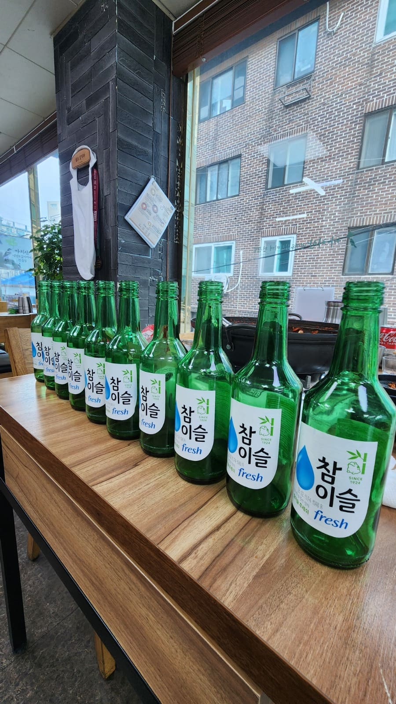
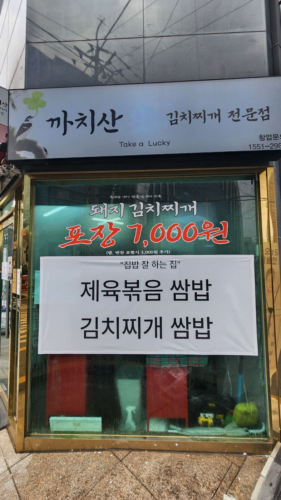
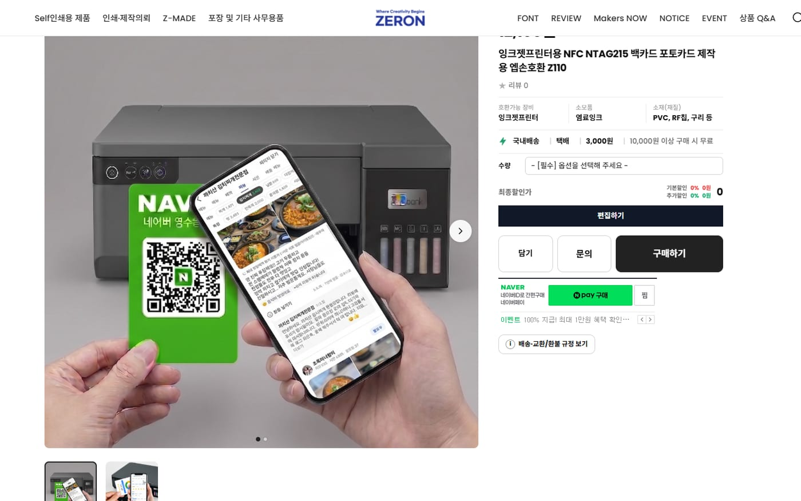
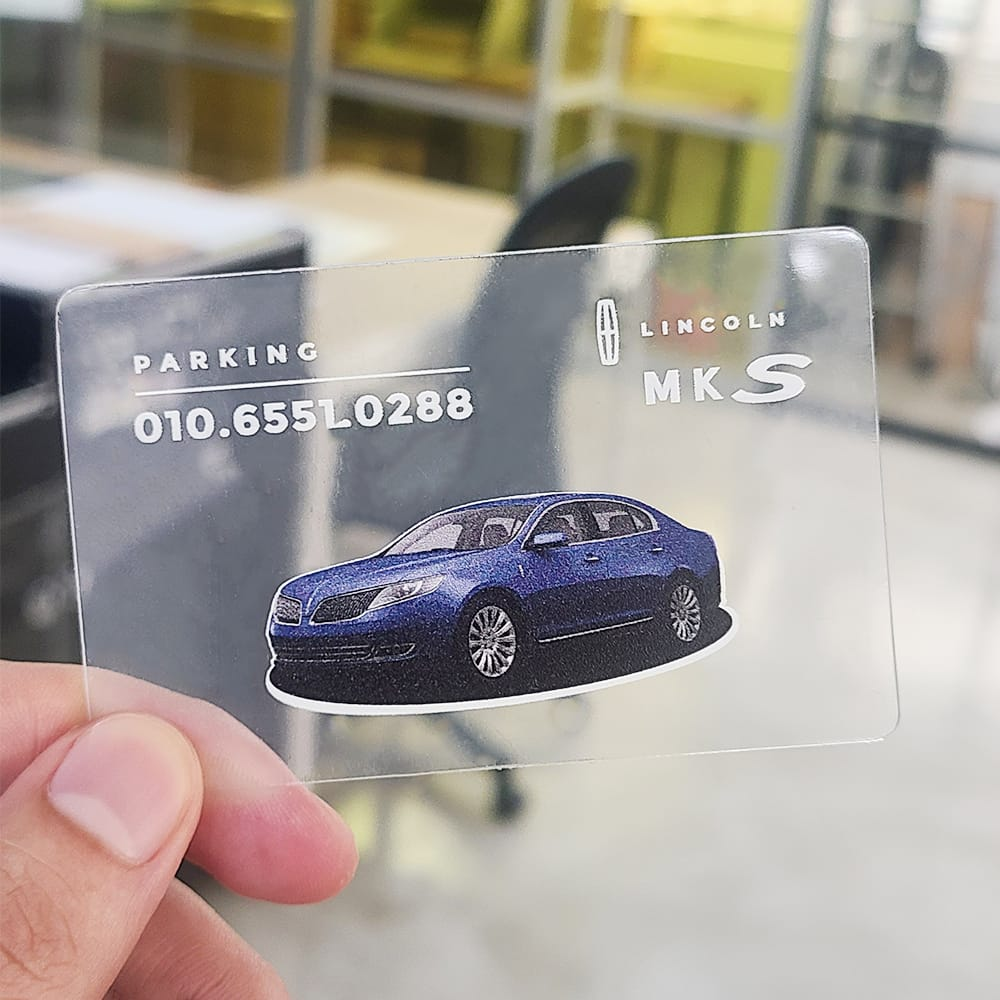
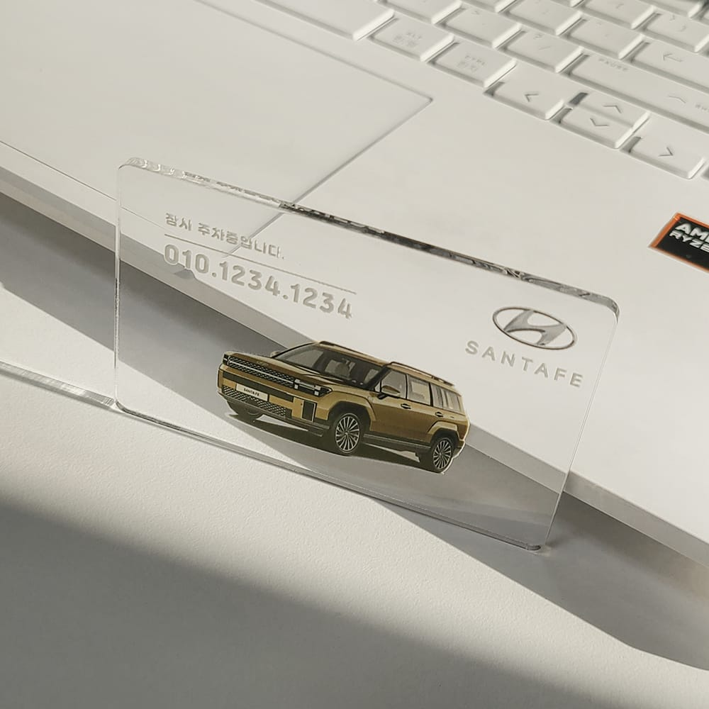
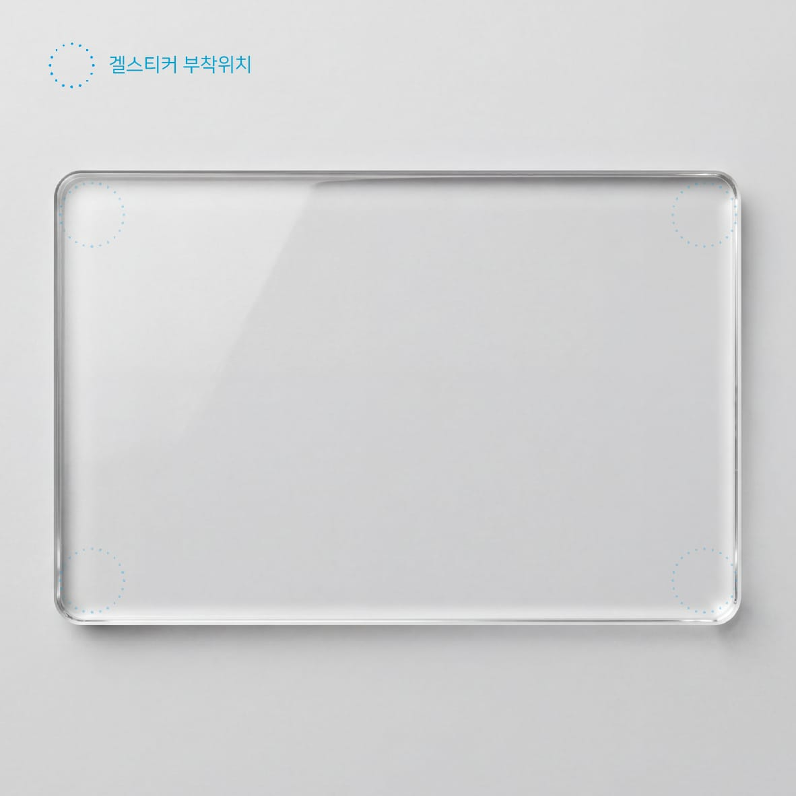
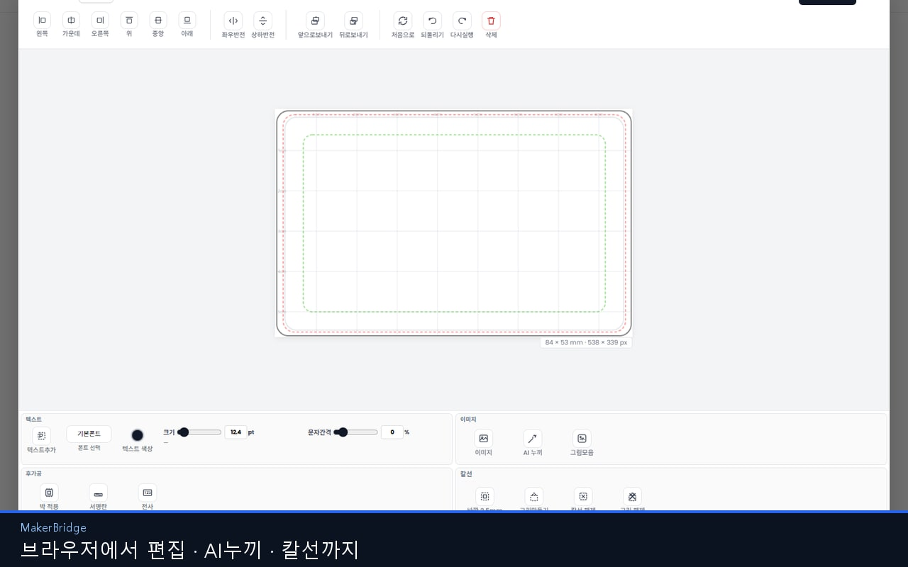
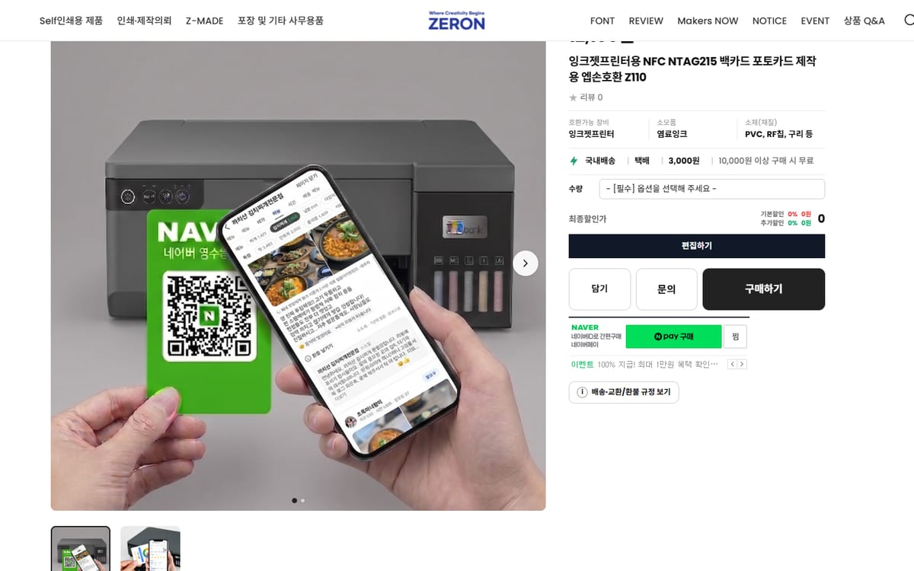
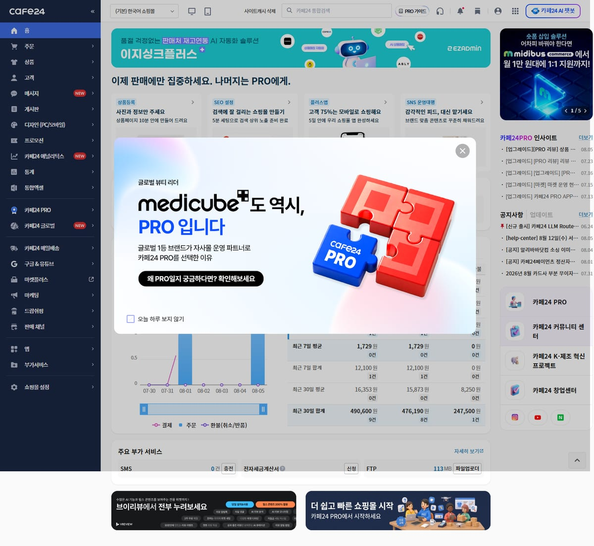
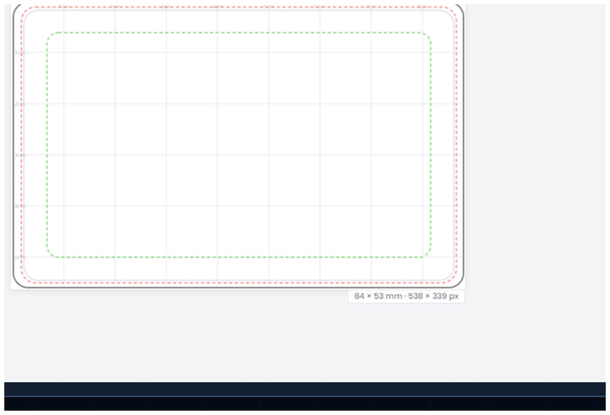

COMMERCE
- Cafe24
- Godomall
- Imweb
- Naver SmartStore
- Custom Commerce
- POD Commerce
- Commerce Integration
비즈니스에 필요한 모든 것을 설계하고 구현합니다.
아이디어에서 판매까지, 한 곳에서.
오프라인 매장의 상품을
온라인 비즈니스로 전환
까치산 김치찌개 — 실제 로컬 매장의 메뉴·패키지·브랜드 경험을 스마트스토어와 쿠팡 판매 구조로 재설계했습니다. 단순 디자인 작업이 아니라, 오프라인에 부가 매출 채널을 만드는 전환 프로젝트입니다.
VIEW STORE ↗


디자인하고, 주문하고, 제작한다
SaveAs는 단순 쇼핑몰이 아닙니다. 사용자가 웹에서 상품을 고르고 직접 디자인한 뒤 주문까지 이어지는 POD / Custom Product Commerce Platform입니다.




쇼핑몰 상품 페이지에서 바로 디자인하는 웹 편집기
Cafe24에 설치하는 Web Product Editor App. POD·인쇄·커스텀 상품 판매자가 고객에게 텍스트, 이미지, 정렬, 후가공, 칼선, 프리뷰까지 제공하는 제작 엔진입니다.




개발 장소의 제약을 제거한다
PC에 묶여 있던 Cursor 기반 개발을 모바일로 이어가고, Cloud 연동으로 PC가 꺼져 있어도 작업이 가능한 방향으로 확장합니다. 퇴근 후, 이동 중, 어디서든 같은 맥락을 이어갑니다.

설치형 웹 경험으로 전환된 커머스
공개 웹사이트 형태를 넘어, 모바일 최적화·설치형 경험·멤버십형 접근까지 연결한 Private Web App 구축 사례입니다. 브랜드명은 비공개로 처리합니다.
브라우저 탭이 아니라, 손에 쥐는 업무/판매용 앱처럼 동작하도록 설계합니다.
특정 솔루션에 맞추지 않습니다. 비즈니스에 필요한 방식에 맞춰 기술을 선택합니다.
필요한 것이 정해져 있지 않아도 됩니다.
문제부터 함께 정의하고, 필요한 형태로 구현합니다.